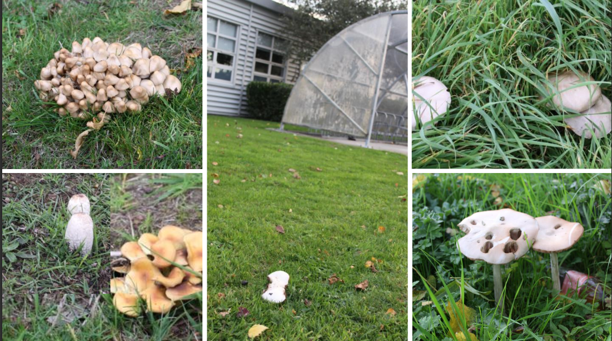
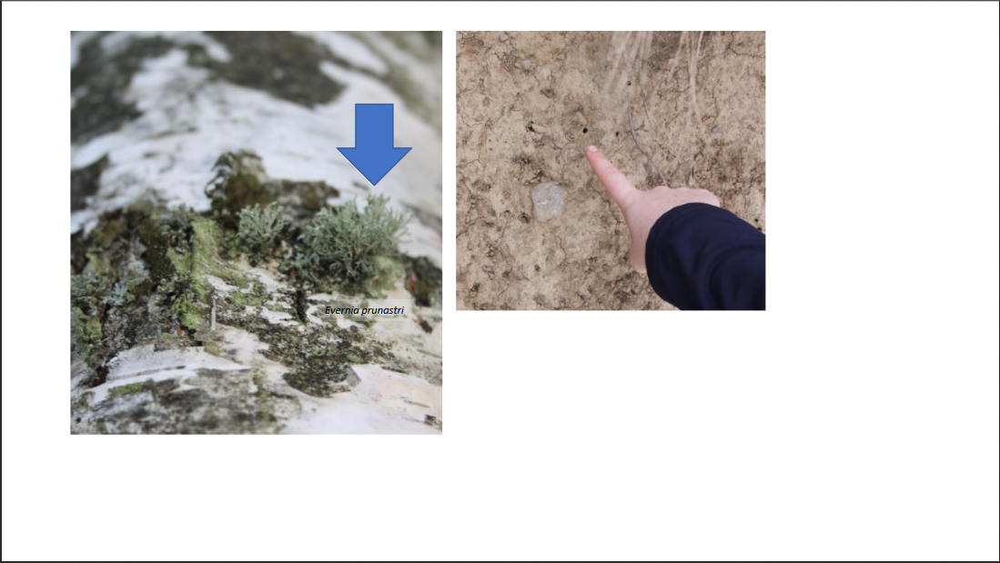
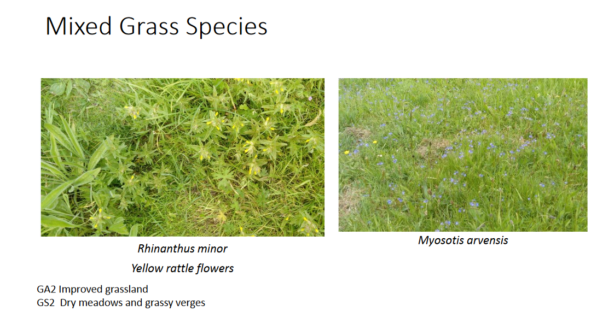

The plant life in the campus include relic hedges, mushrooms, trees and mixed grass species.
Below is a selection of plant life on the campus, taken from a PDF made by ITB Horticulture lecturer Lorraine Foley.


